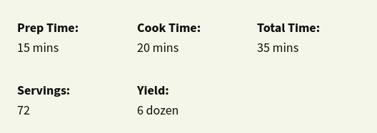

Award Winning Soft Chocolate Chip Cookies
:max_bytes(150000):strip_icc():format(webp)/4533707-215c8b63f7ba4fd697a210343739c5f8.jpg)
This recipe made perfectly soft chocolate chip cookies. The dough is made with two packets of instant pudding mix — an ingredient I had never seen anyone use in cookie dough — which seems to give the cookies a softer, more bakery-style texture. Think of these as the "soft-baked" style cookies that have a somewhat pliable, bendy texture.
But the most important thing to note about this recipe is that it makes a lot of cookies (six dozen to be exact!). This makes it an ideal recipe to whip up if you're baking for a large group, but not the best option if you're baking for just a few people. That said, you can pre-scoop the cookie dough onto a sheet tray, freeze the dough balls, then transfer them into zip-top bags and stash them in the freezer for later.

Ingredients
- 4 ½ cups all-purpose flour
- 2 teaspoons baking soda
- 2 cups butter, softened
- 1 ½ cups packed brown sugar
- ½ cup white sugar
- 2 (3.4 ounce) packages instant vanilla pudding mix
- 4 eggs
- 2 teaspoons vanilla extract
- 4 cups semisweet chocolate chipsli
- 2 cups chopped walnuts (Optional)
Direction
- Preheat the oven to 350 degrees F (175 degrees C).
- Sift together flour and baking soda in a medium bowl, set aside.
- Cream together butter, brown sugar, and white sugar in a large bowl. Beat in instant pudding mix until blended. Stir in eggs and vanilla.
- Add flour mixture to the butter mixture until it's well incorporated. Fold in chocolate chips and nuts.
- Drop cookies by rounded spoonfuls onto ungreased cookie sheets.
- Bake in batches in the preheated oven until the edges are golden brown, 10 to 12 minutes, switching racks halfway through.
Get Another Recipes :